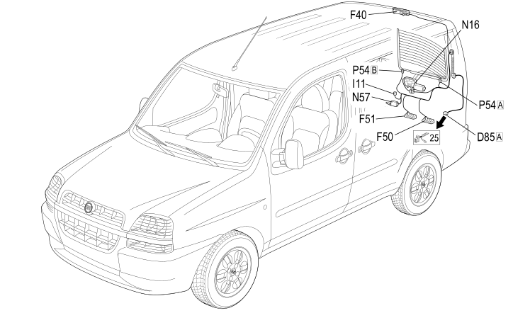

27 TAILGATE
- Path
- Electrical equipment > 2 WIRING > 27 TAILGATE
- Kind
- wiring harness
- Applies to
- engines: 1.2 8v, 1.6 16v, 1.3 JTD 16V, 1.9 JTD 8V, 1.9 DIESEL; all production periods; only with equipment: BIPOWER
- Interactive page
- https://sloeber94.github.io/elrnDB-fDbl/en/#/223003784
Applies to: engines: 1.2 8v, 1.6 16v, 1.3 JTD 16V, 1.9 JTD 8V, 1.9 DIESEL; all production periods; only with equipment: BIPOWER

Topics that link to this page (21)
- D085A TAILGATE REAR SEAL/ (TAILGATE)
- D85A TAILGATE REAR SEAL/ ( LEFT TAILGATE )
- D85A TAILGATE REAR SEAL/ ( LEFT TAILGATE )
- D85A TAILGATE REAR SEAL/ ( LEFT TAILGATE )
- F040 ADDITIONAL TAIL-LIGHT ('THIRD BRAKE LIGHT') (TAILGATE)
- F40 ADDITIONAL (THIRD BRAKE LIGHT) ( LEFT TAILGATE )
- F050 LEFT NUMBER PLATE LIGHT (TAILGATE)
- F50 LEFT NUMBER PLATE LIGHT ( LEFT TAILGATE )
- F051 RIGHT NUMBER PLATE LIGHT (TAILGATE)
- F51 RIGHT NUMBER PLATE LIGHT ( LEFT TAILGATE )
- I011 BOOT OPENING SWITCH (TAILGATE)
- I11 BOOT OPENING SWITCH ( LEFT TAILGATE )
- I11 BOOT OPENING SWITCH ( LEFT TAILGATE )
- I21 SWITCH ON REAR DOOR ( LEFT TAILGATE )
- N016 REAR WINDOW WIPER MOTOR (TAILGATE)
- N16 REAR WINDOW WIPER MOTOR ( LEFT TAILGATE )
- N52 REAR DOOR LOCK GEARED MOTOR ( LEFT TAILGATE )
- N057 BOOT LOCK GEARMOTOR (TAILGATE)
- N57 BOOT LOCK GEARMOTOR ( LEFT TAILGATE )
- P054A LEFT HEATED REAR WINDSCREEN (TAILGATE)
- P054B LEFT HEATED REAR WINDSCREEN (TAILGATE)